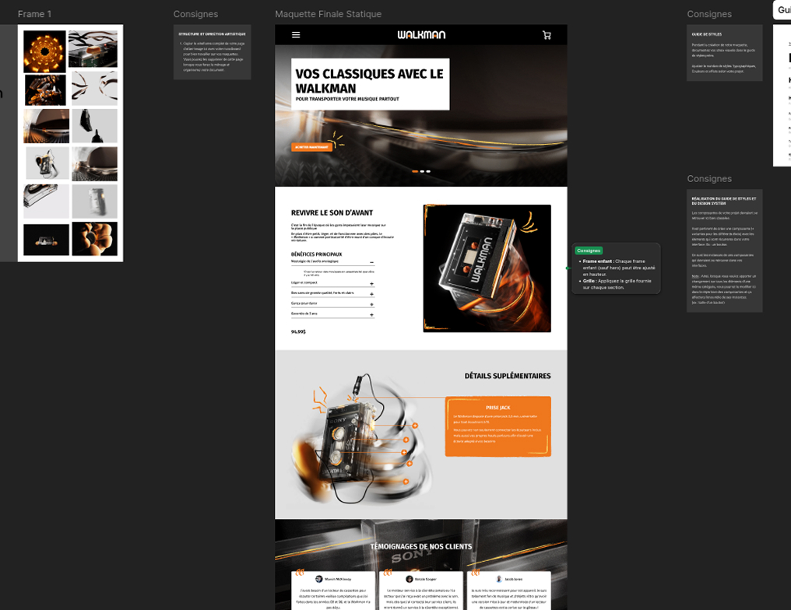

1.
Produit et moodboard
La première étape de ce projet a été de trouver sur quel produit nous voulions faire la page et par la suite de créer un moodboard et trouver des comparables
2.
Wireframe
Par la suite, il a fallu créer le wireframe de la page selon les consignes demandées
3.
Design de la page
Le design a permis de construire l'identité de la page, en ajoutant des éléments de design comme des strokes et les images.
4.
Prototypage
Le prototypage a permis à notre projet de devenir plus concret, nous pouvons ainsi observer à quoi les interactions pourraient ressembler.
5.
Contrôle de qualité
Avec le contrôle de qualité, j'ai pu m'assurer d'avoir tous les éléments demandés tout en ayant un design atrayant.


